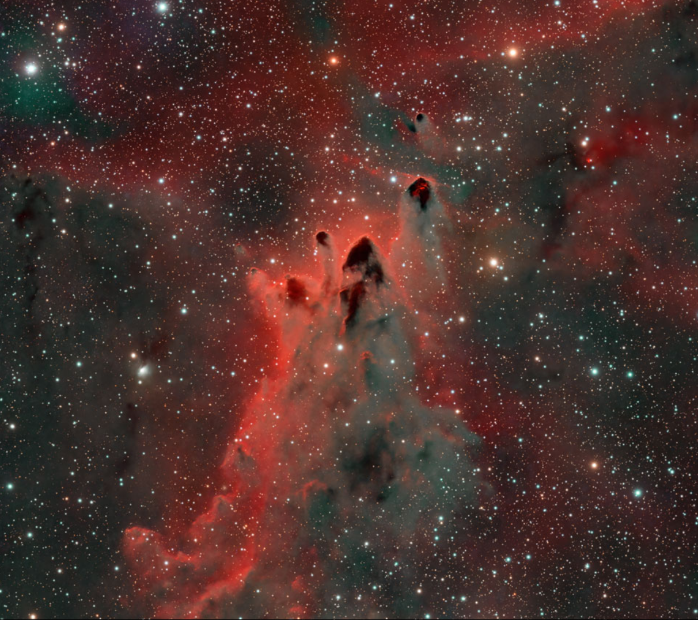
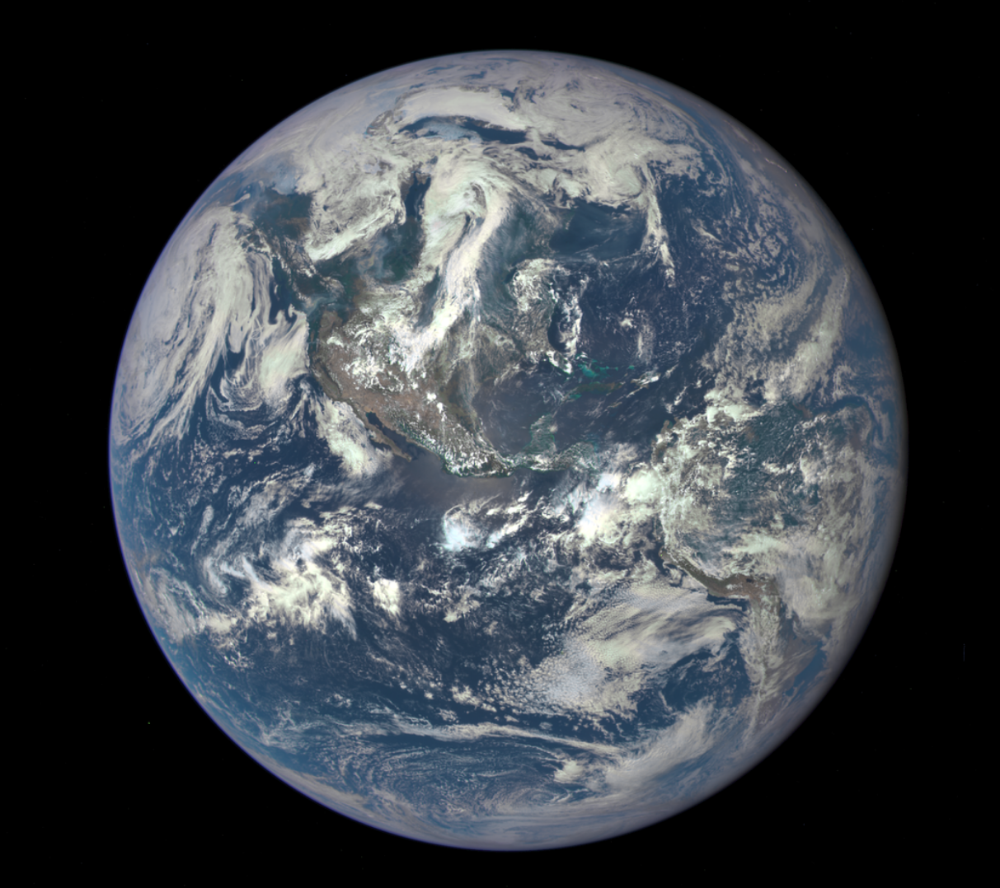
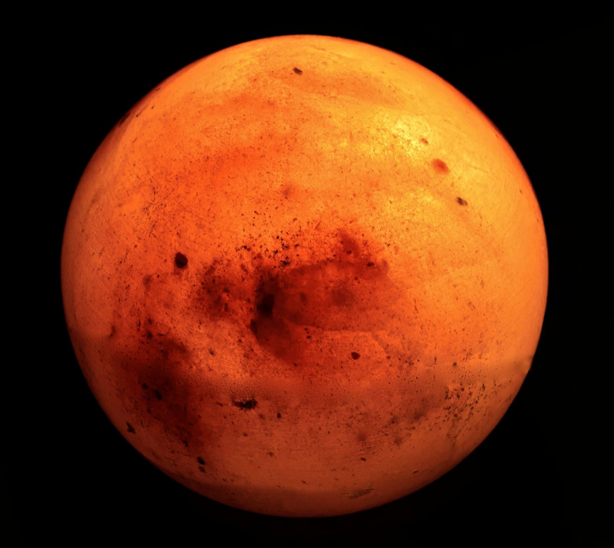

Discover the cosmos! Each day a different image or photograph of our fascinating universe is featured, along with a brief explanation written by a professional astronomer.

Information of the daily imagery collected by DSCOVR's Earth Polychromatic Imaging Camera (EPIC) instrument. Uniquely positioned at the Earth-Sun Lagrange point, EPIC provides full disc imagery of the Earth and captures unique perspectives of certain astronomical events such as lunar transits using a 2048x2048 pixel CCD (Charge Coupled Device) detector coupled to a 30-cm aperture Cassegrain telescope.

NASA’s InSight Mars lander takes continuous weather measurements (temperature, wind, pressure) on the surface of Mars at Elysium Planitia, a flat, smooth plain near Mars’ equator. Please note that there are sometimes problems with the sensors on Mars that result in missing data! If you see a long gap, a search result may bring up more information on whether it is a long-lasting problem.